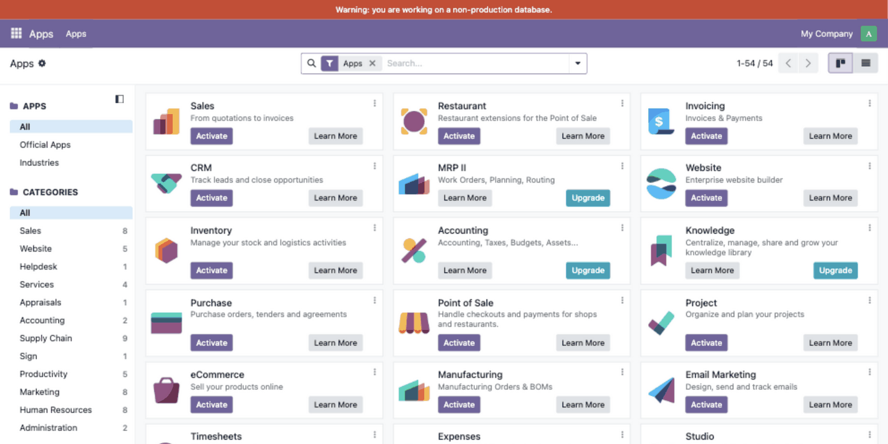
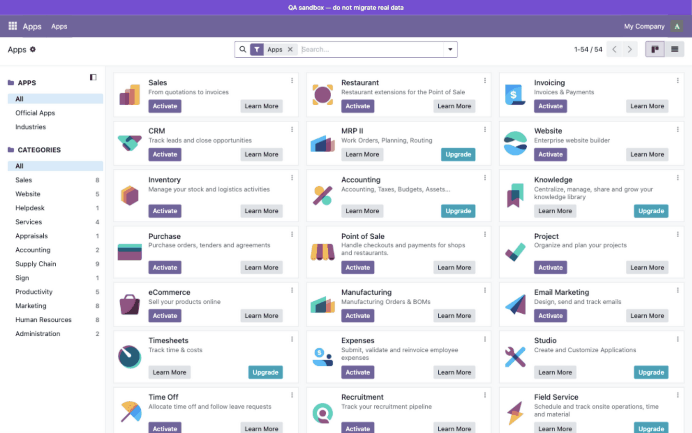
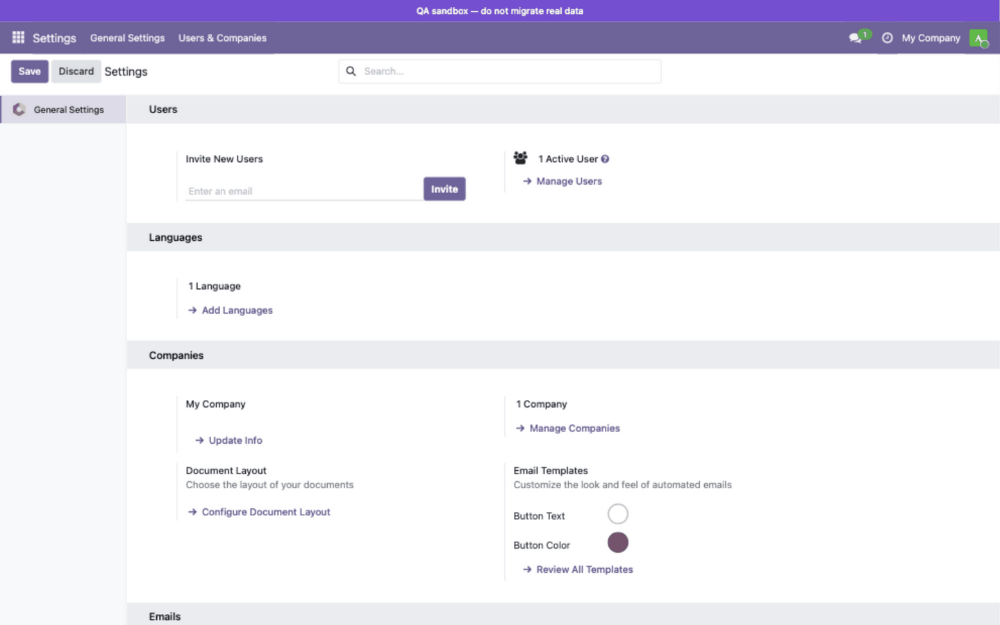

Know at a glance whether you are on production — or not.

Automatic red banner on a staging database — impossible to miss, impossible to forget.
A staging database that looks exactly like production is an accident waiting to happen: test e-mails sent to real customers, dummy records created on live data, hours lost to confusion between environments. Environment Banner paints a colored, always-visible bar above the navigation bar, so every user immediately knows they are not working on production.

Fully customizable: your own message, your own color.

The banner follows users into every application — impossible to miss.
Everything is managed with standard system parameters (Settings › Technical › System Parameters). Nothing to configure on install: detection works out of the box.
| Parameter | Default | Description |
|---|---|---|
environment_banner.mode |
auto |
auto, on (always show) or off (never show) |
environment_banner.label |
built-in message | Custom banner text |
environment_banner.color |
#D0442C |
Banner background color (CSS color) |
Example: set environment_banner.mode to on and
environment_banner.color to #7A4DD7 to mark an internal
training database with a purple banner.